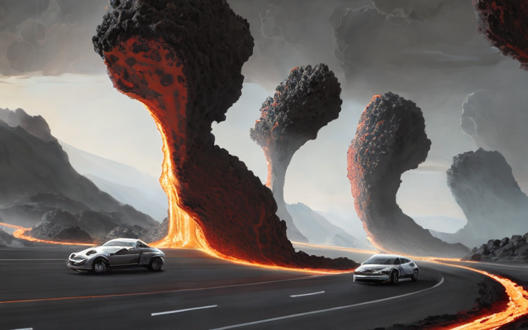
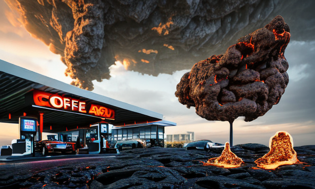
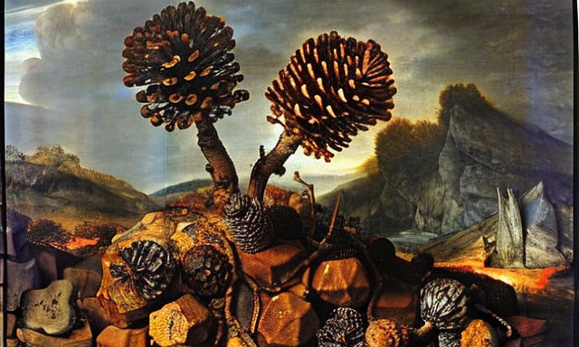
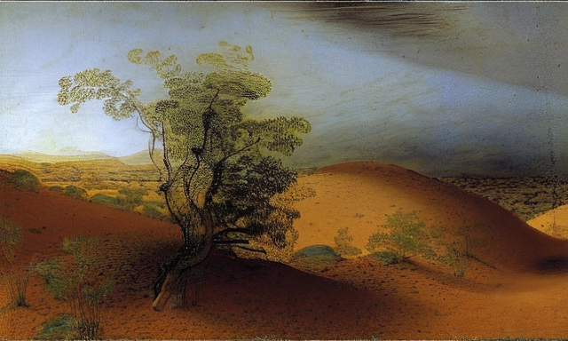
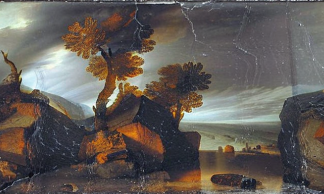

Ο πλανήτης Ραξξάρ και τα τεράφυτα
Αρχική Σελίδα
Πίνακας Περιεχομένων
Οδηγώντας τους δρόμους της Τζακαρ

Ο πλανήτης Ραξξάρ, ένας κόσμος πέρα από τον δικό μας, ένα μέρος όπου οι δυνατοί επιβιώνουν και οι αδύναμοι χάνονται. Σε αυτόν τον πλανήτη, δεν υπάρχει κανένα έλεος ή περιθώριο λάθους, η γη καλύπτεται από βράχους σαν ξυράφι, βράχους που μπορούν να κόψουν τη σάρκα τους τόσο εύκολα όσο ένα μαχαίρι μέσα στο βούτυρο. Και σαν να μην έφτανε αυτό, ποτάμια ζεματιστής λιωμένης λάβας ρέουν μέσα από τις κοιλάδες, μια συνεχής υπενθύμιση του κινδύνου που ελλοχεύει σε κάθε στροφή.
Όμως, παρά τις σκληρές συνθήκες, υπάρχει ζωή στο Ραξξάρ, ζωή που έχει προσαρμοστεί στο ασυγχώρητο περιβάλλον, ζωή που έμαθε να ακμάζει σε έναν κόσμο που θα την έβλεπε να καταστρέφεται.
Στην καρδιά του πλανήτη βρίσκεται μια πόλη, μια πόλη που δεν μοιάζει με καμία άλλη, μια πόλη όπου οι άνθρωποι έχουν συσπειρωθεί για να επιβιώσουν ενάντια σε όλες τις πιθανότητες. Αυτή η πόλη είναι ένα προπύργιο ελπίδας, ένας φάρος φωτός σε έναν κόσμο σκότους.
Όταν βγαίνουμε στους δρόμους, βλέπουμε το τοπίο του Ραξξάρ σε όλο του το μεγαλείο. Οι δρόμοι είναι φτιαγμένοι από τραχιά άσφαλτο, ένα συνονθύλευμα από τραχιές και οδοντωτές άκρες, μια απόδειξη των σκληρών συνθηκών αυτού του κόσμου. Αλλά οι οδηγοί του Τζακάρ είναι απτόητοι, οι καλύτεροι των καλυτεροτέρων, έχουν κατακτήσει την τέχνη της πλοήγησης σε αυτούς τους ύπουλους δρόμους, αποφεύγοντας τους αιχμηρούς λίθους των δρόμων και ξεγλιστρώντας των ποταμών λιωμένης λάβας που ρέουν μέσα στην πόλη.
Μπαίνουμε πίσω από το τιμόνι του στιβαρού αυτοκινήτου μας, νιώθοντας τη δύναμη του κινητήρα από κάτω μας, και πατάμε το γκάζι. Το αυτοκίνητο βρυχάται ζωντανεύει, και εμείς φεύγουμε, τρέχουμε στους δρόμους, αποφεύγουμε και ελλισόμαστε ανάμεσα στα άλλα οχήματα, τα αντανακλαστικά μας τόσο αιχμηρά όσο οι βράχοι που μας περιβάλλουν.
Οδηγούμε και νιώθουμε τη θερμότητα των ποταμών λάβας στο δέρμα μας, μυρίζουμε τις τοξικές αναθυμιάσεις των επιβλαβών αερίων στον αέρα, αλλά ποτέ δεν αμφιταλαντευόμαστε, δεν τα παρατάμε ποτέ. Γιατί εμείς είμαστε οι οδηγοί του Τζακάρ, αυτοί που έχουν μάθει να επιβιώνουν σε αυτόν τον σκληρό και αδυσώπητο κόσμο.
Το τοξικό περιβάλλον

Και τώρα, μετά την παράτολμη και επικίνδυνη βόλτα μας στους δρόμους του Τζακάρ, παρκάρουμε το έμπιστο αυτοκίνητό μας, άξιοι μιας μικρής ανάπαυσης.
Αλλά αυτό δεν είναι απλώς μια συνηθισμένη ανάπαυση, γιατί έχουμε φτάσει σε ένα μέρος τόσο επικίνδυνο όσο οι δρόμοι που μόλις περιηγηθήκαμε, ένα μέρος όπου ο αέρας είναι γεμάτος με τοξικά αέρια, ένα μέρος όπου η λάθος αναπνοή θα μπορούσε να σημαίνει βέβαιο θάνατο.
Μιλάμε για το καφενείο, ένα μέρος όπου οι γενναίοι πάνε να πιουν το πρωινές τους τζούρες, ένα μέρος όπου η ατμόσφαιρα είναι τόσο τοξική όσο τα βλαβερά αέρια που γεμίζουν τους δρόμους απ` έξω.
Καθώς μπαίνουμε μέσα, βλέπουμε τους κινδύνους του καφενείου να είναι ανοιχτοί μπροστά μας. Ο αέρας είναι πυκνός από τις αναθυμιάσεις των τοξικών αερίων και ο καφετιέρης φοράει μάσκα για να προστατευτεί από τα επιβλαβή σωματίδια. Αλλά είμαστε απτόητοι, είμαστε οι ήρωες του πλανήτη Ραξξάρ, και είμαστε εδώ για ένα φλιτζάνι καφέ.
Πλησιάζουμε στον πάγκο, με τα νεύρα μας στα άκρα, έτοιμοι για όλα, και παραγγέλνουμε τα αψεψήματά μας. Ο καφετιέρης μας δίνει τα φλιτζάνια και εμείς πίνουμε μια γουλιά, νιώθοντας τη ζέστη του καφέ στο στόμα μας και την τοξική ατμόσφαιρα στους πνεύμονές μας.
Είμαστε όμως δυνατοί, είμαστε αυτοί που έχουμε μάθει να ευδοκιμούμε σε έναν κόσμο που θα μας έβλεπε να καταστρεφόμαστε και πίνουμε άλλη μια γουλιά, απολαμβάνοντας τη γεύση του καφέ, παρά τον κίνδυνο που μας περιβάλλει.
Ένας οργανισμός που καθαρίζει την ατμόσφαιρα

Καθώς καθόμαστε στο καφενείο, πίνοντας τον καφέ μας, έχουμε την ευκαιρία να βρούμε έναν τίτλο στην εφημερίδα, έναν τίτλο που θα αλλάξει για πάντα τη μοίρα του πλανήτη Ραξξάρ.
“Νέα ανακάλυψη: Ένας θαυματουργός οργανισμός που καθαρίζει την ατμόσφαιρα!”
Διαβάζουμε απ ́την αρχή, με κομμένη την ανάσα, καθώς μαθαίνουμε για έναν νέο οργανισμό που έχει τη δυνατότητα να καθαρίσει την ατμόσφαιρα του Ραξξάρ, να το κάνει ένα μέρος όπου τα τοξικά αέρια δεν θα αποτελούν πλέον απειλή .
Διαβάζουμε για το πώς αυτός ο νέος οργανισμός, γνωστός ως «φυτά», έχει τη δύναμη να απορροφά τα επιβλαβή αέρια και να απελευθερώνει φρέσκο, καθαρό αέρα στην ατμόσφαιρα. Διαβάζουμε για τα πειράματα που έχουν γίνει, και τα αποτελέσματα επετεύχθησαν.Και καθώς διαβάζουμε, συνειδητοποιούμε ότι αυτή είναι μια στιγμή του πεπρωμένου, μια στιγμή που θα αλλάξει τη μοίρα του Ραξξάρ για πάντα.
Τελειώνουμε τον καφέ μας και βγαίνουμε στο δρόμο, με το μυαλό μας γεμάτα σχέδια και όνειρα, να εισάγουμε τη φυτική ζωή στον πλανήτη Ραξξάρ, να τον κάνουμε ένα μέρος όπου τα τοξικά αέρια δεν αποτελούν πλέον απειλή και η ατμόσφαιρα είναι καθαρή και διάφανη.
Η εισαγωγή των φυτών: ένα θαύμα

Και έτσι ξεκινήσαμε να εισάγουμε τα φυτά στον πλανήτη Ραξξάρ, για να φέρουμε αυτόν τον θαυματουργό οργανισμό σε έναν κόσμο που τον χρειάζεται τόσο απεγνωσμένα.
Καθώς οδηγούμε, συνειδητοποιούμε τις πραγματικές δυνατότητες αυτών των καταπληκτικών φυτών, όχι μόνο έχουν την ικανότητα να καθαρίζουν την ατμόσφαιρα, αλλά έχουν επίσης τη δυνατότητα να αυτοματοποιούν το έργο των περιβαλλοντικών νόμων, κάνοντας το έργο της διατήρησης του πλανήτη καθαρό πολύ πιο εύκολο .
Γιατί αυτά τα φυτά δεν είναι απλά συνηθισμένα φυτά, είναι τεράφυτα, ατρόμητα και αποφασιστικα, που απλώνουν τους σπόρους τους παντού, δίνοντας ζωή ακόμα και στα πιο σκληρά και ερημικά μέρη του πλανήτη.
Βλέπουμε τον αντίκτυπο που έχουν, καθώς τα τοξικά αέρια αρχίζουν να διαχέονται και αντικαθίστανται από τον φρέσκο, καθαρό αέρα που παράγουν. Και βλέπουμε τη δουλειά που κάνουν, αυτοματοποιώντας τον καθαρισμό της ατμόσφαιρας και κάνοντας τον πλανήτη ασφαλέστερο και υγιέστερο μέρος για όλους.
Και έτσι η οδήγησή μας συνεχίζεται, καθώς μεταφέρουμε αυτά τα καταπληκτικά φυτά σε κάθε γωνιά του πλανήτη Ραξξάρ, φυτεύοντάς τα σε πόλεις και κωμοπόλεις, σε χωράφια και δάση, σε κάθε μέρος όπου μπορούν να επιτύχουν το μέγιστο.
Η εύρεση της ισορροπίας

Και ιδού, τα τεράφυτα συνεχίζουν να αναπτύσσονται και να εξαπλώνονται, ένα νέο θαύμα αποκαλύπτεται. Αυτά τα φυτά, όχι μόνο καθαρίζουν τον αέρα και αυτοματοποιούν τη λειτουργία των περιβαλλοντικών νόμων, αλλά έχουν και τη δύναμη να δημιουργούν βροχή!
Καθώς οι βροχές πέφτουν από τον ουρανό, ξεπλένουν τον τοξικό αέρα, καθαρίζοντας την ατμόσφαιρα και εξομαλύνοντας τις τραχείς, κοφτερες σαν ξυράφι πέτρες του δρόμου. Με τους δρόμους πλέον ομαλούς και απαλλαγμένους κινδύνων, τα αυτοκίνητα στον πλανήτη Ραξξάρ επιταχύνουν στους δρόμους με ευκολία, χωρίς να χρειάζεται πλέον να αποφεύγουν βράχους και το ανώμαλο έδαφος.
Γιατί οι έρημοι και οι αφύτευτες περιοχές στον Ραξξάρ είναι τοξικές, γεμάτες με επιβλαβή αέρια που πνίγουν τη ζωή κάθε πλάσματος παράτολμο να ζήσει εκεί. Και είναι αυτές οι περιοχές που συμβάλλουν τα μέγιστα στην τοξική ατμόσφαιρα του Ραξξάρ, κάνοντας τη ζωή ακόμη πιο δύσκολη για τους κατοίκους του.
Αλλά με τεράφυτα να απλώνουν τους σπόρους τους και να μεγαλώνουν, οι μη φυτευμένες περιοχές δεν υπάρχουν πια. Και καθώς η βροχή συνεχίζει να πέφτει, οι έρημοι αντικαθίστανται από καταπράσινα τοπία και ο αέρας καθαρίζεται από τις τοξίνες του.
Ο αέρας καθαρίζει και οι δρόμοι γίνονται πιο ομαλοί, οι κάτοικοι του Ραξξάρ μπορούμε να ευδοκιμήσουνε, ζώντας τη ζωή μας με ασφάλεια και άνεση. Και βλέπουμε τον απίστευτο αντίκτυπο που έχει αυτό, καθώς ο άλλοτε τοξικός πλανήτης μεταμορφώνεται σε ένα μέρος θαύματος και ομορφιάς.